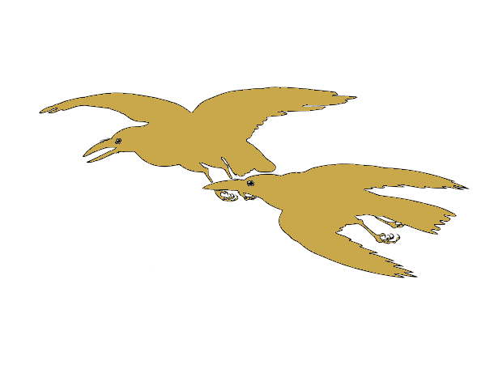

✦
Verhaal: 0 / 4
De Rozen van Zilverweide speel je in liggende stand. Draai je telefoon of tablet een kwartslag.
Kies wie jij vandaag bent. Elk heeft zijn eigen ogen, oren en talenten.
Ieder van hen heeft eigen talenten en eigen scènes. Sommigen hebben zelfs een vaste stek in het dorp die het waard is om vaker op te zoeken.
Het hart van Zilverweide — waar alles begon
Smalle steegjes, lage daken, fluisterende schaduwen

Welke locatie ga je bezoeken?
Groen, doorgegroeid, doornen en klimop
Welke locatie ga je bezoeken?
Een lange laan met hoge huizen — stil, maar niet leeg
Welke locatie ga je bezoeken?